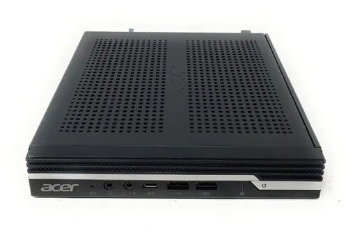
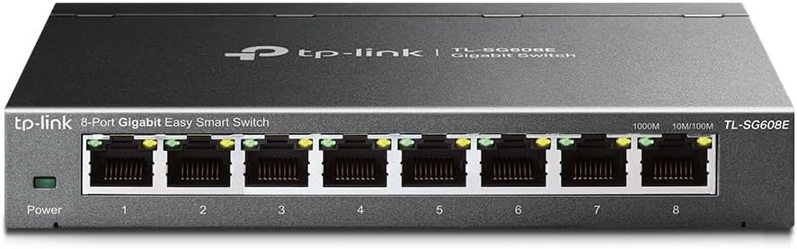
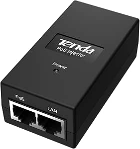
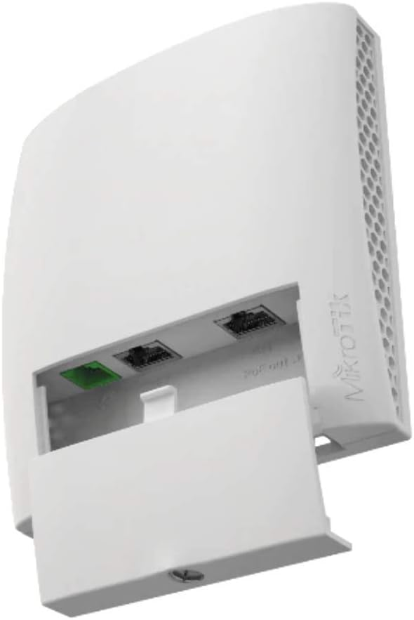

Server Host

- Model: Acer Veriton N4660G (Mini PC Form Factor)
- Hardware Specifications:
- CPU: Intel Core i5-8500T (6 Cores, 6 Threads, 2.10 GHz base clock).
- RAM: 16 GB DDR4 @ 2667MHz (Configured in Symmetric Dual-Channel).
- Storage: 512 GB Toshiba M.2 NVMe PCIe SSD.
- Bought for: €160 (Refurbished).
Managed Network Switch

- Model: TP-Link TL-SG608E (8-Port Gigabit Easy Smart Managed Switch)
- Hardware Specifications: 8x Gigabit (10/100/1000 Mbps) RJ45 ports, Layer 2 (L2) network features, durable metal chassis.
- Bought for: €27.99
Power over Ethernet (PoE) Injector

- Model: Tenda POE15F
- Hardware Specifications: 48V PoE Adapter, Fast Ethernet (10/100 Mbps), IEEE 802.3af/u compliant, 15.4W maximum power output.
- Bought for: 10.74€
Wi-Fi Access Point

- Model: MikroTik wsAP ac lite
- Hardware Specifications: Dual-Band (2.4 GHz and 5 GHz) wireless capabilities, Fast Ethernet (10/100 Mbps) ports, PoE-In support, powered by the RouterOS operating system.
- Estimated Market Value: ~€60 (New).
Network Cabling (Patch Cables)
- Model: Cat6 Network Cables (0.25m, Black, 5-Piece Multipack)
- Hardware Specifications: Category 6, 250MHz bandwidth, Halogen-Free, compatible with Gigabit (1000 Mbit/s) and 10-Gigabit standards.
- Bought for: 9.95€